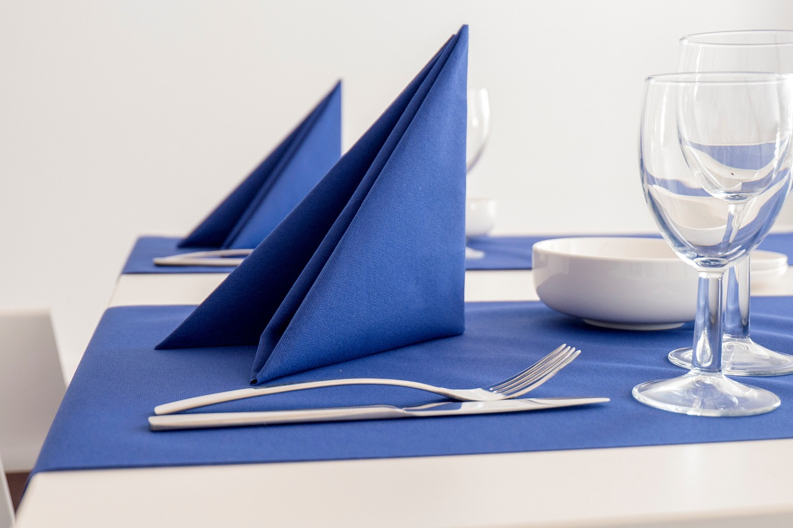
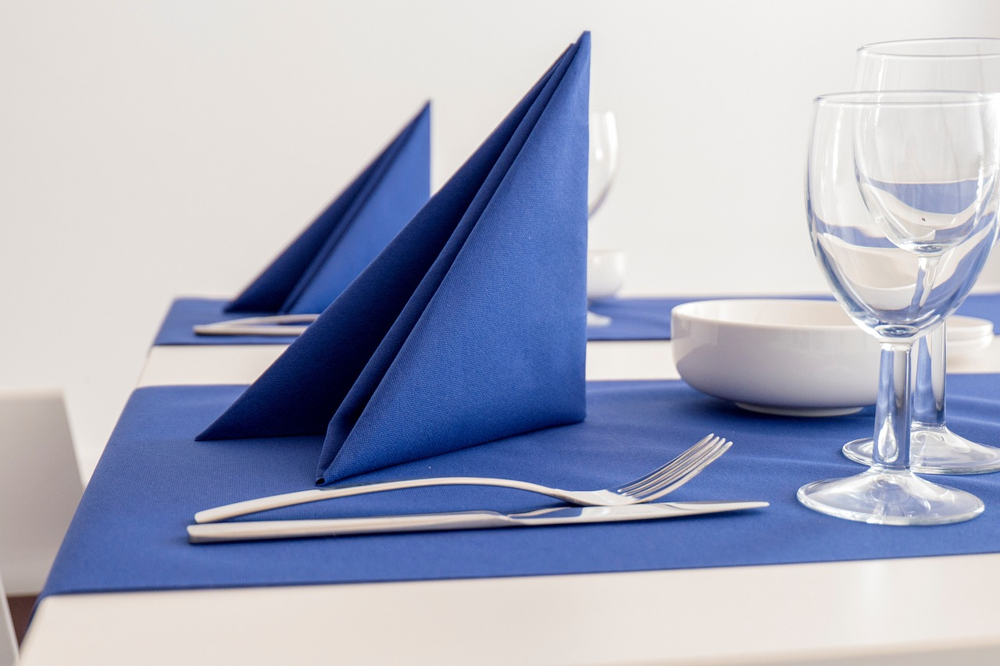

Σχετικά με Εμάς
- Η Στρατηγική μας
- Η Φιλοσοφία μας
- Πελατοκεντρική προσέγγιση
- Αριστεία στην παράδοση
- Συνεχής Μάθηση & Καινοτομία
- Δημιουργία Μακροπρόθεσμης Αξίας
- Κοινωνική Ευθύνη
Στην εταιρεία συμβούλων μας, πιστεύουμε στην παροχή απαράμιλλης τεχνογνωσίας και καινοτόμων λύσεων στους πελάτες μας στους κλάδους των τροφίμων, του τουρισμού και της φιλοξενίας. Στόχος μας είναι να βοηθήσουμε τους πελάτες μας να επιτύχουν βιώσιμη ανάπτυξη και επιτυχία παρέχοντας προσαρμοσμένες στρατηγικές που βασίζονται στην έρευνα και τις βέλτιστες πρακτικές του κλάδου.
Κατανοούμε ότι οι τομείς των τροφίμων, του τουρισμού και της φιλοξενίας εξελίσσονται συνεχώς και αντιμετωπίζουν μοναδικές προκλήσεις, γι' αυτό και δεσμευόμαστε να παραμένουμε μπροστά από την καμπύλη και να βελτιώνουμε συνεχώς τις υπηρεσίες μας.
Οι πελάτες μας βρίσκονται στο επίκεντρο όλων όσων κάνουμε. Πιστεύουμε στη δημιουργία μακροπρόθεσμων συνεργασιών που βασίζονται στην εμπιστοσύνη, την κατανόηση και τη συνεργασία. Προσπαθούμε να κατανοήσουμε σε βάθος τις ανάγκες, τους στόχους και τις προκλήσεις των πελατών μας για να παρέχουμε εξατομικευμένες λύσεις που οδηγούν στην επιτυχία τους.
Δεσμευόμαστε να παρέχουμε αριστεία σε κάθε δέσμευση. Συγκεντρώνουμε μια ομάδα επαγγελματιών υψηλής εξειδίκευσης και αξιοποιούμε την τεχνογνωσία μας για να προσφέρουμε υψηλής ποιότητας και καινοτόμες λύσεις που υπερβαίνουν τις προσδοκίες.
Αγκαλιάζουμε μια κουλτούρα συνεχούς μάθησης και καινοτομίας. Παραμένουμε ενήμεροι για τις τελευταίες τάσεις του κλάδου, την έρευνα και τις τεχνολογικές εξελίξεις, προσφέροντας εξειδικευμένα μαθήματα κατάρτισης στο προσωπικό και το διοικητικό προσωπικό των πελατών μας.
Δεσμευόμαστε να δημιουργήσουμε μακροπρόθεσμη αξία για τους πελάτες μας. Στην AR Akron έχουμε μια ολιστική άποψη των επιχειρήσεων των πελατών μας και στόχος μας είναι να παρέχουμε λύσεις που έχουν διαρκή αντίκτυπο, δίνοντας τη δυνατότητα στους πελάτες μας να επιτύχουν τους στόχους τους και να ευδοκιμήσουν σε ένα ταχέως εξελισσόμενο επιχειρηματικό τοπίο.
Αναγνωρίζουμε την ευθύνη μας να συνεισφέρουμε θετικά στην κοινωνία και το περιβάλλον...

 
